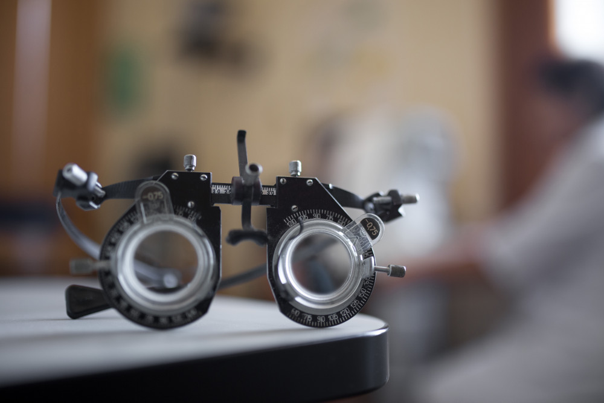

اعتلال الشبكية (مرض العين)
اعتلال الشبكية: مرض ينشأ جراء الأضرار التي تصيب الأوعية الدموية الصغيرة في العين والتي يماعتلال الشبكية هو مرض ينشأ عندما يكون هناك تلف في الأوعية الدموية الصغيرة في العين والتي يمكن أن تؤدي إلى مشاكل في الرؤية.
المخاطر
يقدر أن اعتلال الشبكية السكري هو السبب الأكثر شيوعًا للإصابة بالعمى بين البالغين الذين تتريقدر أن اعتلال الشبكية بسبب مرض السكري هو السبب الأكثر شيوعًا للإصابة بالعمى بين البالغين.
الوقاية
- اجراء فحص للعين سنويًا
- يحتاج البالغون من مرضى السكري من النوع الأول إلى إجراء فحص مفصل للعين في غضون خمس سنوات بعد الإصابة بداء السكري مع اجراء الفحص سنويًا بعد ذلك.
- يحتاج البالغون من مرضى السكري من النوع الثاني إلى فحص العين بعد وقت قصير من التشخيص ثم اجراء الفحص سنويًا.
- اتصل بمزود الرعاية الصحية لمرضى السكري إذا لاحظت أي تغيير في حدة الرؤية.
- حافظ على مستويات الجلوكوز في الدم ضمن المعدلات الطبيعية.
- افحص ضغط الدم وحافظ علىه في المستوى المستهدف.
- اقلع عن التدخين.
- ناقش معدلات نشاطك البدني مع طبيب العيون.
- يجب أن تتجنب النساء المصابات باعتلال الشبكية تناول أقراص منع الحمل.